Googleアシスタントのデベロッパープラットフォームでは、スマートスピーカー、電話、自動車、テレビ、ヘッドフォンなどの10億台を超えるデバイスに向けて、仮想のパーソナルアシスタントであるGoogleアシスタントの機能を拡張するソフトウェアを作成できます。 ユーザーはアシスタントと会話を交わして、食料品の購入や配車の予約などを行うことができるようになります。開発者としてあなたは、アシスタントデベロッパープラットフォームを使用して、ユーザーと独自のサードパーティのフルフィルメントサービスとの間の楽しく効果的な会話体験を簡単に作成および管理することができます。
このコードラボは、Googleアシスタントで開発するための中間レベルの概念をカバーします。また、このコードラボは、レベル1のコードラボで作成されたアクションを基に構築されています。 これを開始する前に、レベル1のコードラボを完了することを強くお勧めします。
このコードラボで作成するアクションは、ユーザーが選択したアシストに基づいて、神秘的な土地、グリフィンバーグでの探求の運勢をユーザーに知らせます。
何をつくりますか？
このコードラボでは、次の機能を使用して、高度な会話型アクションを作成します。
- ユーザーからデータを収集し、その値に応じて会話プロンプトを変更します。
- 会話を進めるためのフォローアップ質問で応答します。
- ゲームループを作成して、ユーザーが運勢を受け取った後にアクションを再び操作できるようにします。
ビルドを開始する前に、"Hey Google, talk to Fate and Fortune" と言うことで、Googleアシスタント対応デバイスにてライブアクション を操作できます。戻ってきたユーザーが通るこのアクションのデフォルトのパスは、次のインタラクションのようになります。
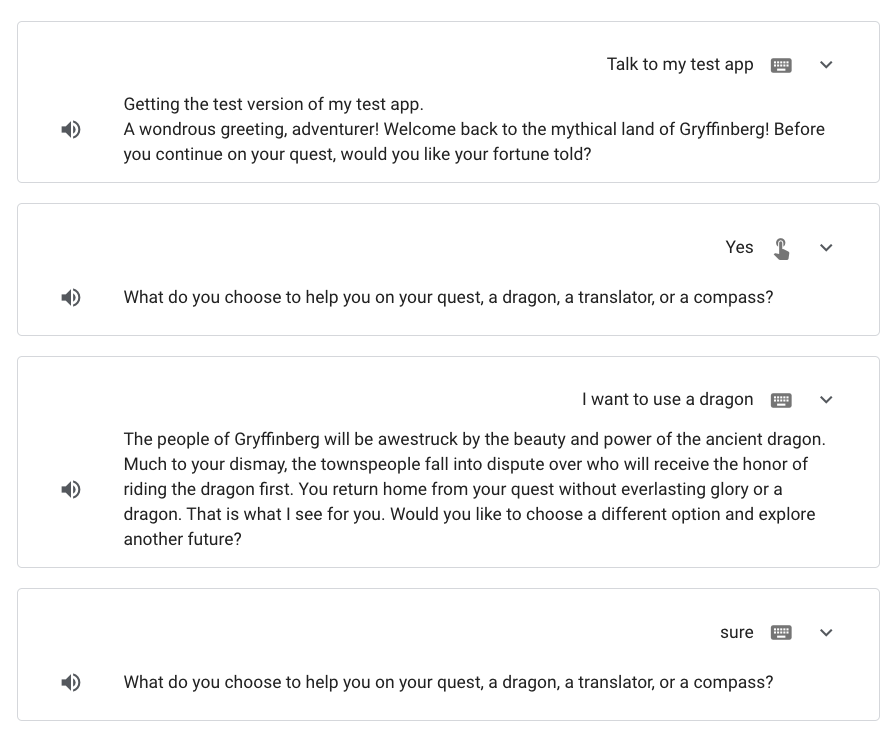
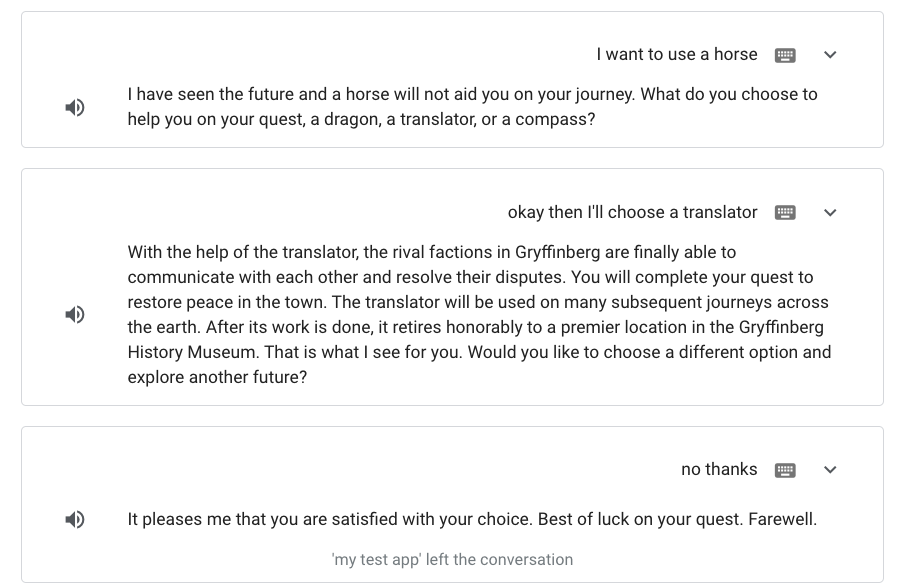
What you'll learn
- slots（スロット）を使用してユーザーからデータを収集する方法
- conditions（コンディション）を使用してシーンにロジックを追加する方法
- ゲームループを追加する方法
- サポートパスを追加する方法
必要なもの
このコードラボの前提条件は次のとおりです。
- Google Chrome のようなウェブブラウザ。
- 完成したコードラボレベル1のアクションプロジェクト
このコードラボのフルフィルメントコードを理解するには、必須ではありませんが、JavaScript（ES6）に精通していることが強く推奨されます。
最初のコードラボでは、1つのシーン Start で単純な会話型アクションを作成しました。
このコードラボでは、アクションの会話を拡張します。 次のセクションでは、アクションを構成して以下を実行します:
- ユーザーが運勢を聞きたいときに新しい
Fortuneシーンに移行する - 旅のためにどの支援を選択したいかをユーザーに尋ねます
- ユーザーの選択に基づいてカスタマイズされたフォーチュンを提供する
Fortune シーンの作成
このセクションでは、 Fortune シーンを作成し、会話中にユーザーが Fortune シーンにどのように移行するかを定義します。
Fortune という新しいシーンを作成するには、次の手順に従います:
- コードラボレベル1のアクションプロジェクトを開きます。
- 上部ナビゲーションの Develop をクリックします。
- Scenes の下で、 Start シーンをクリックします。
- yes インテント（When yes is matched ボックス）をクリックしてオプションを開きます。
- Send prompts の選択を外して、プロンプトを削除します。
- Transition セクションで、ドロップダウンメニューをクリックし、テキストボックスをクリックして、
Fortuneと入力します。 次に、 Add をクリックします。 これにより、Fortuneと呼ばれる新しいシーンが作成されます。 また、ユーザーが運勢を聞きたいときに、StartシーンからFortuneシーンへの遷移を追加します。
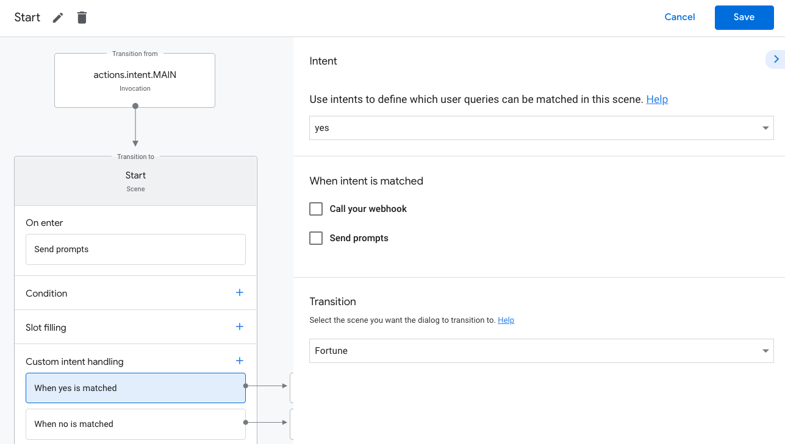
Fortune シーンの会話ロジックを定義する
このコードラボでは、 Fortune シーンを構成して、ユーザーに "What do you choose to help you on your quest, a dragon, a translator, or a compass?" と尋ねます。 slot filling（スロットフィリング）と呼ばれる機能を使用して、先に進む前にユーザーから必要な情報を収集できます。
アクションは、ドラゴン、トランスレーター、コンパスの3つの支援にフォーチュンを与えます。 ユーザーの入力でこれら3つのオプションを識別するようにアクションを構成するには、新しいtype（タイプ）を作成する必要があります。
シーンのスロットフィリングステージ内でタイプを使用して、ユーザーから必要な情報を定義できます。 NLUエンジンは、ユーザー入力値でスロットの一致を検出すると、スロットを型付きパラメーターとして抽出するため、シーンでそれを使用してロジックを実行できます。
available_options タイプを作成する
このセクションでは、 available_options という新しいタイプを作成します。これは、プロンプトに応答してユーザーが選択できる3つのオプション（ドラゴン、トランスレーター、コンパス）を指定します。 ユーザーが同義のことを言った場合に備えて、これらのオプションのいくつかの同義語も定義します。 後のセクションでは、 available_options タイプをスロットに追加して、ユーザーの選択を取得することを指定します。
available_options タイプを作成するには、次の手順に従います:
- 左側のナビゲーションで、 Types をクリックします。
- +（プラス記号）をクリックし、
available_optionsと入力して、 Enter キーを押します。 available_optionsをクリックしてオプションを開きます。
タイプは情報のキーと値のペアとして構成されます。キーはタイプの名前で、values（値）はそのキーの同義語です。 キーを定義すると、自動的に値として追加されます。
ユーザーが選択できる3つのオプションを追加するには、次の手順に従います:
- Add entries セクションまでスクロールします。
- New entry テキストボックスに
dragonと入力し、 Enter キーを押します。 このアクションはdragonキーを作成します。 - Add values テキストフィールドに
hydraと入力し、 Enter キーを押して値（同義語）として追加します。 次に、値のlizardに対してこの手順を繰り返します。 - 残りのキーと対応する値を追加します:
translator | translator, communicator, machine, decoder, translatecompass | compass, direction, guide
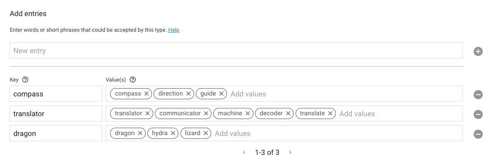
- Save をクリックします。
アクションは、 available_options が dragon、translator、および compass であることを理解し、いくつかの対応する同義語も認識できます。
スロットフィリングを設定する
次に、 Fortune シーンでスロットフィリングを構成する必要があります。 スロットフィリングロジックを構成するには、次の手順に従います:
- 左側のナビゲーションの Scenes で、 Fortune をクリックします。
Fortuneシーンで、Slot filling の +（プラス記号）をクリックします。- 右側の Enter slot name テキストボックスで、スロット名として
chosenOptionsを追加します。 - Select type ドロップダウンで、スロットタイプとして
available_optionsを選択します。 - This slot is required を選択します。
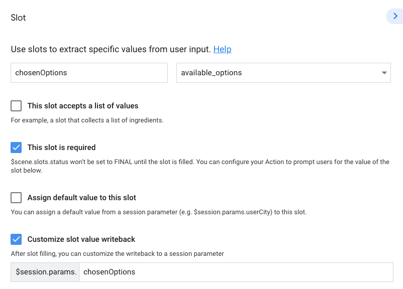
- Send prompts を選択し、次のメッセージと提案チップを追加します。:
candidates:
- first_simple:
variants:
- speech: >-
What do you choose to help you on your quest, a dragon, a
translator, or a compass?
suggestions:
- title: 'Dragon'
- title: 'Translator'
- title: 'Compass'- Save をクリックします。
これで、 available_options タイプがスロットに追加されました。これは、続行する前にユーザーから収集する必要がある情報（支援の選択肢）をアクションに通知します。 また、スロット内にプロンプトを設定しました。これは、ユーザーがシーンのスロットフィリングステージに到達したときにプロンプトキューに追加されます。
スロットに chosedOptions という名前を付けた場合、 Customize slot value writeback フィールドは同じ名前（$session.params.chosenOptions）で更新されることに注意してください。 このパラメーターには、Actions Builder内およびクライアントライブラリを介してフルフィルメント内でその名前でアクセスできます。
scene.slots.status == "FINAL" コンディションを設定する
スロットを追加すると、condition（コンディション） scene.slots.status == "FINAL" がコンディションリストに自動的に追加されます。
コンディション scene.slots.status == "FINAL" は、スロットフィリングが完了しているかどうかをチェックします。 すべてのスロットが埋まると、コンディションによってWebhookがトリガーされるか、新しいシーンに移行するか、プロンプトキューにプロンプトが追加されます。
このセクションでは、 scene.slots.status == "FINAL" を構成して、スロットが満たされたときにプロンプトキューにプロンプトを追加します。
このプロンプトを FINAL コンディションに追加するには、次の手順に従います:
scene.slots.status == "FINAL"コンディションをクリックして、オプションウィンドウを開きます。- Send prompts を選択して、次のプロンプトを追加します。
candidates:
- first_simple:
variants:
- speech: You picked $session.params.chosenOptions.- Save をクリックします。
シュミレーターでアクションをテストする
この時点で、スロットを埋めるためにユーザーが選択する必要があるオプションを定義しました。 ユーザーからこの情報を取得した後、アクションは、ユーザーが選択した特定のオプションを参照するプロンプトを提供する必要があります。
アクションをテストするには、次の手順に従います:
- 上部のナビゲーションバーで、 Test をクリックします。
- Input フィールドに
Talk to my test appをクリックまたは入力して、 Enter キーを押します。 - Input フィールドに
Yesと入力し、 Enter キーを押します。 （または、 Yes サジェスチョンチップをクリックすることもできます。）
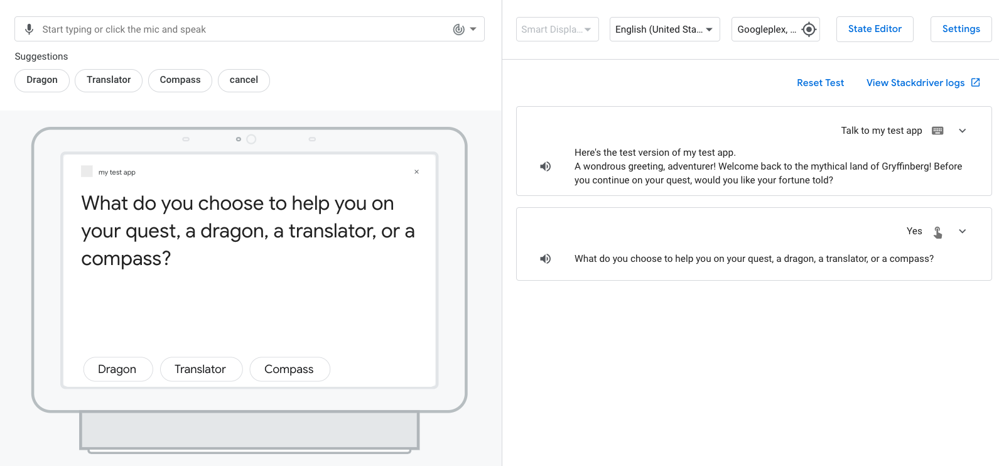
dragonとタイプするか話かけます。"You picked dragon." というプロンプトが表示されるはずです。
次のセクションでは、ユーザーが選択できる各支援のプロンプトをカスタマイズします。
コンディションを使ってプロンプトをカスタマイズする
このセクションでは、ユーザーが選択できるオプションごとにコンディションを追加し、コンディションごとにカスタムプロンプトを追加します。
dragon フォーチュンをカスタマイズする
コンディションを更新し、ユーザーが "dragon" を選択したときのプロンプトをカスタマイズするには、次の手順に従います:
- 上部ナビゲーションの Develop をクリックします。
- 左側のナビゲーションで、 Fortune シーンをクリックします。
scene.slots.status == "FINAL"コンディションをクリックして、オプションウィンドウを開きます。- コンディションステートメントを次のように更新します：
scene.slots.status == "FINAL" && session.params.chosenOptions == "dragon" - Send prompts を選択します。
- コードエディターで次のフォーチュンのプロンプトを更新します:
candidates:
- first_simple:
variants:
- speech: >-
The people of Gryffinberg will be awestruck by the beauty and power
of the ancient dragon. Much to your dismay, the townspeople fall
into dispute over who will receive the honor of riding the dragon
first. You return home from your quest without everlasting glory or
a dragon.- Save をクリックします。
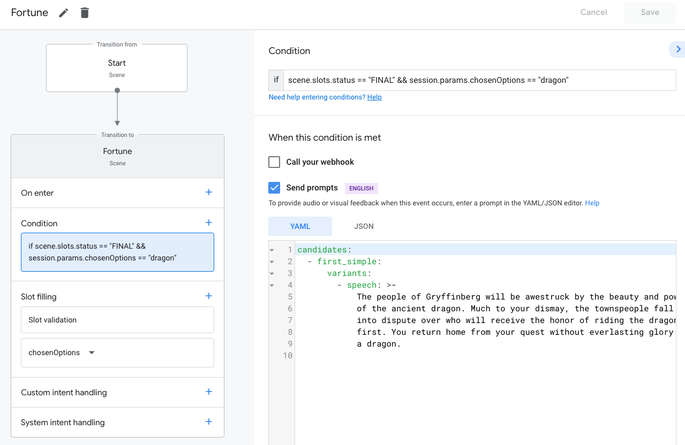
ここで、ユーザーが "dragon" または類似の音を発すると、アクションはその選択に基づいてフォチューンを提供します。 次に、残りの2つの選択を追加します。
translator フォーチュンをカスタマイズする
コンディションを追加し、ユーザーが "translator" を選択したときにプロンプトをカスタマイズするには、次の手順に従います:
- Condition の横にある +（プラス記号）をクリックします。
scene.slots.status == "FINAL" && session.params.chosenOptions == "translator"を else if テキストボックスに追加します。- Send prompts を選択します。
- コードエディターに次のプロンプトを追加します:
candidates:
- first_simple:
variants:
- speech: >-
With the help of the translator, the rival factions in Gryffinberg
are finally able to communicate with each other and resolve their
disputes. You will complete your quest to restore peace in the town.
The translator will be used on many subsequent journeys across the
earth. After its work is done, it retires honorably to a premier
location in the Gryffinberg History Museum.- Save をクリックします。

compass フォーチュンをカスタマイズする
コンディションを追加し、ユーザーが "compass" を選択したときにプロンプトをカスタマイズするには、次の手順に従います:
- Condition の横にある +（プラス記号）をクリックします。
scene.slots.status == "FINAL" && session.params.chosenOptions == "compass"を else if テキストボックスに追加します。- Send prompts を選択します。
- コードエディターに次のプロンプトを追加します:
candidates:
- first_simple:
variants:
- speech: >-
The compass will help you find the mystical and ancient Library of
Gryffinberg. Among its infinite stacks of dusty books, you find one
entitled "Wisdom of the Ages". By the time you've read the
50,000-page tome, the townspeople have forgotten their problems. You
will write a second edition of "Wisdom of the Ages", but have
limited commercial success.- Save をクリックします。
シュミレーターでアクションをテストする
この時点で、アクションはユーザーが選択したオプションに基づいてユーザーにカスタマイズされたフォーチュンを提供するはずです。
アクションをテストするには、次の手順に従います:
- 上部のナビゲーションバーで、 Test をクリックします。
- Input フィールドに
Talk to my test appと入力し、 Enter キーを押します。 - Input フィールドに
Yesと入力し、 Enter キーを押します。 または、 Yes サジェスチョンチップをクリックします。 Translatorとクリック、入力、または話しかけます。
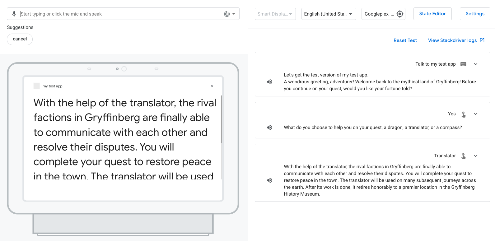
"translator" オプションの適切なフォーチュンを受け取るはずです。
このセクションでは、ユーザーが別のオプションを選択して、選択後に別の運勢を聞くことができるようにアクションを構成します。 この変更は、ゲーム終了時のメッセージ "Do you want to play again?" に似ています。このループを構築するために、前のセクションで作成した yes および no インテントを再利用して、それらを Again という新しいシーンに追加しましょう。
Again シーンの作成
このセクションでは、新しい Again シーンを作成し、別のオプションを選択するかどうかをユーザーに尋ねるプロンプトを追加します。
Again シーンを作成するには、次の手順に従います:
- 上部ナビゲーションの Develop をクリックします。
- Scenes の下の +（プラス記号）をクリックします。
Againと入力して Enter キーを押します。- 左側のナビゲーションで、
Againシーンをクリックします。 - On enter の横にある +（プラス記号）をクリックします。
- Send prompts を選択し、次のプロンプトとサジェスチョンチップを追加します:
candidates:
- first_simple:
variants:
- speech: >-
That is what I see for you. Would you like to choose a different option and
explore another future?
suggestions:
- title: 'Yes'
- title: 'No'- Save をクリックします。
Fortune から Again シーンへの遷移を追加
ユーザーがフォーチュンを受け取った後、会話は新しい Again シーンに移行する必要があります。
Fortune シーンから Again シーンへの遷移を追加するには、次の手順に従います:
- Fortune シーンをクリックします。
- 最初のコンディション（
scene.slots.status == "FINAL" && session.params.chosenOptions == "dragon"）をクリックして、オプションウィンドウを開きます。 - 下にスクロールして、 Transition の下の
Againを選択します。 - Save をクリックします。
- 2番目のコンディションをクリックして、オプションウィンドウを開きます。
- 下にスクロールして、 Transition の下の
Againを選択します。 - Save をクリックします。
- 3番目のコンディションをクリックして、オプションウィンドウを開きます。
- 下にスクロールして、 Transition の下の
Againを選択します。 - Save をクリックします。
シミュレータでアクションをテストする
この時点で、アクションは、ユーザーがフォーチュンを受け取った後、次のプロンプトを提供するはずです: "That is what I see for you. Would you like to choose a different option and explore another future?"
アクションをテストするには、次の手順に従います:
- 上部のナビゲーションバーで、 Test をクリックします。
- Input フィールドに
Talk to my test appと入力し、 Enter キーを押します。 - Input フィールドに
Yesと入力し、 Enter キーを押します。または、 Yes サジェスチョンチップをクリックします。 dragonをクリック、入力、または話しかけます。
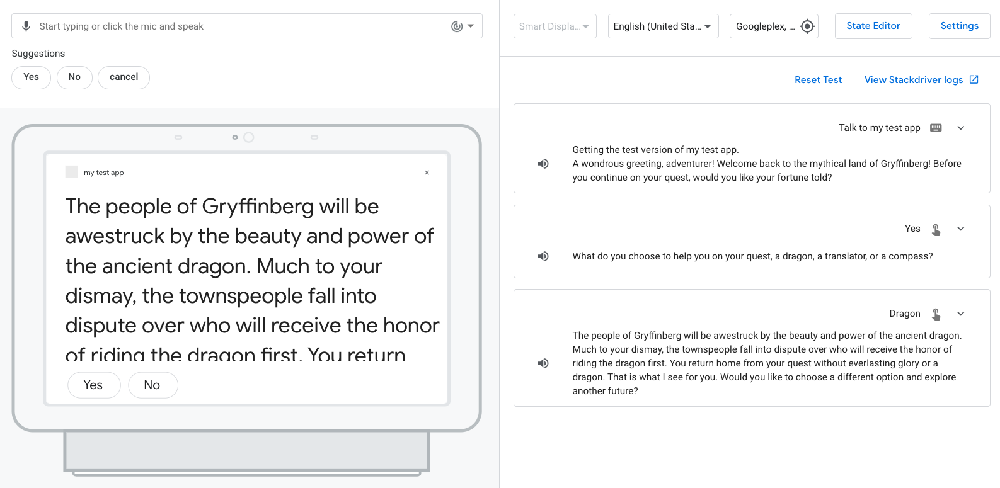
ドラゴンのオプションと Again のプロンプトのフォーチュンを受け取るはずです。
インテントと Again シーンへの遷移を追加
このセクションでは、 yes および no インテントを Again シーンに追加して、ユーザーが新しいオプションを選択するかどうかをアクションが理解できるようにします。 yes および no インテントに適切な遷移も追加します。 yes のインテントは Fortune シーンに移行し、 no のインテントは End conversation システムシーンに移行します。
Again シーンにインテントとトランジションを追加するには、次の手順に従います:
- 上部ナビゲーションの Develop をクリックします。
-
Againシーンをクリックします。 - Custom intent handling の横にある +（プラス記号）をクリックします。
- インテントドロップダウンメニューから Yes を選択します。
- Transition ドロップダウンメニューから
Fortuneを選択します。 - Save をクリックします。
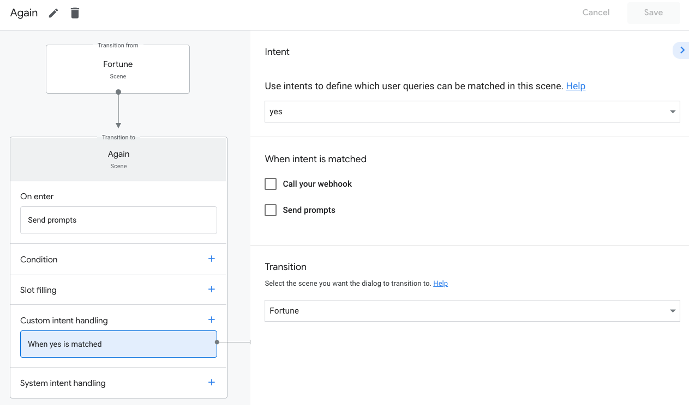
- Custom intent handling の横にある +（プラス記号）をクリックします。
- インテントドロップダウンメニューから no を選択します。
- Transition プルダウンメニューから End conversation を選択します。
- Send prompts を選択し、コードエディターに次のプロンプトを追加します:
candidates:
- first_simple:
variants:
- speech: >-
It pleases me that you are satisfied with your choice. Best of luck on your quest. Farewell.- Save をクリックします。
シミュレータでアクションをテストする
アクションは、ユーザーが新しいオプションを選択するか、会話を終了するかを理解する必要があります。
yes インテントをテストするには、次の手順に従います:
- 上部のナビゲーションバーで、 Test をクリックします。
- Input フィールドに
Talk to my test appと入力し、 Enter キーを押します。 - Input フィールドに
Yesと入力し、 Enter キーを押します。 または、 Yes サジェスチョンチップをクリックします。 - いずれかのオプションをクリック、入力、または発声します。
- Input フィールドに
Yesと入力し、 Enter キーを押します。
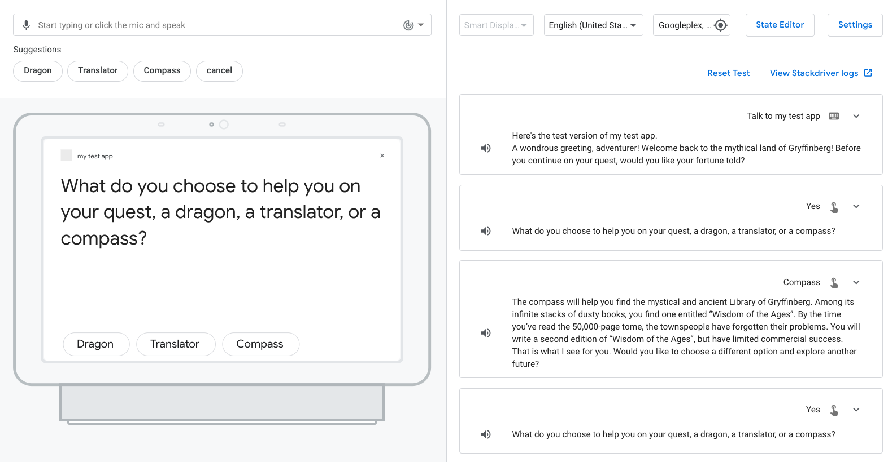
"What do you choose to help you on your quest, a dragon, a translator, or a compass?" というプロンプトが表示されるはずです。
no インテントをテストするには、次の手順に従います:
- いずれかのオプションをクリック、入力、または発声します。
- Input フィールドに
Noと入力し、 Enter キーを押します。
End conversation プロンプトとして以下が表示されるはずです: "It pleases me that you are satisfied with your choice. Best of luck on your quest. Farewell."
これで、ほとんどのユーザーがアクションで取るメインパスが構築されました。 ただし、ユーザーは Fortune シーンのプロンプト "What do you choose to help you on your quest, a dragon, a translator, or a compass?" で提供されない選択肢で応答してくることがあります。
このセクションでは、ユーザーが "magic"、"money"、"horse"、または "phone" をいつ選択するかを理解し、ユーザーに選択時に元の3つの選択肢のいずれかから選択するように再度促すようにアクションを構成します。 このロジックを構成するには、これらの他の選択肢を含む新しい type と、ユーザーがこれらのオプションの1つを言うと一致する新しいインテント other_option を作成する必要があります。 また、 other_option インテント内のトレーニングフレーズにアノテーションを付けて、インテントパラメータを識別および抽出する必要があります。
アシスタントの自然言語処理エンジンは、ユーザー入力値からパラメーターの一致を検出すると、値を型付きパラメーターとして抽出するため、シーンでそれを使用してロジックを実行できます。 このコードラボでは、ユーザーが選択した支援を抽出するようにアクションを構成し、プロンプトでその選択を参照します。
unavailable_options タイプを作成する
アクションがユーザーの入力でそのデータを識別できるように、さまざまな異なるオプションを含む unavailable_options タイプを作成しましょう。
unavailable_options タイプを作成するには、次の手順に従います:
- 上部ナビゲーションの Develop をクリックします。
- Types の下の +（プラス記号） をクリックします。
unavailable_optionsと入力して、Enter キーを押します。- オプションを開くには、
unavailable_optionsをクリックします。 - Add entries セクションに次のエントリと対応する値を入力します。
|
|
|
|
|
|
|
|
Key-Valueテーブルは次のようになります:

- Save をクリックします。
other_option インテントを作成する
次に、 other_option というインテントを作成し、 unavailable_options タイプのオプションを含むトレーニングフレーズを追加します。このインテントには、ユーザーがunavailable_options タイプに含まれる選択肢を選択したときに一致します。
other_option インテントを作成して構成するには、次の手順に従います:
- Intents の下の +（プラス記号） をクリックします。
other_optionと入力し、 Enter キーを押します。other_optionをクリックしてウィンドウを開きます。- 次のトレーニングフレーズを追加し、それぞれの後に Enter キーを押します:
I want to use spellsI really really want to use a phonemagic!cashI want to ride a horse
- Add intent parameters セクションで、パラメータ名を
chosenUnavailableOptionに更新します。 - Save をクリックします。
トレーニングフレーズを入力すると、Actions Builderは spells, phone, magic, cash, horse を unavailable_options タイプから認識し、それらの単語を自動的に強調表示（アノテート）します。次の図に示すように、Actions Builderは、 Add intent parameters セクションにインテントパラメーターを自動的に追加します。 インテントパラメータを使用すると、オプションの名前を抽出し、プロンプトでそのオプションを使用できます。
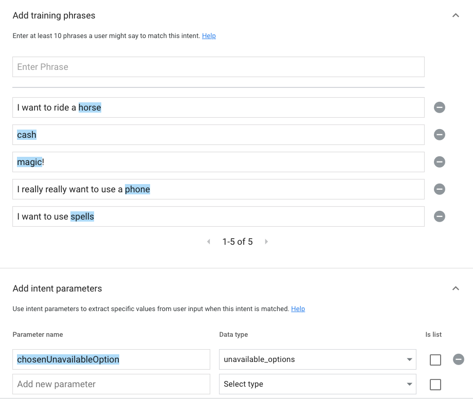
Fortune シーンに other_option インテントを追加する
これで、元から用意されたオプションではないオプションを指定するユーザーを処理できるインテント other_option ができました。 このセクションでは、 other_option インテントを Fortune シーンに追加します。 インテントパラメータを使用して、ユーザーの入力に基づいてプロンプトをカスタマイズします。
other_option インテント を Fortune シーンに追加するには、次の手順に従います:
- Fortune シーンをクリックします。
- Custom intent handling の横にある +（プラス記号） をクリックします。
- インテントドロップダウンメニューから
other_optionを選択します。 - Send prompts を選択して、次のプロンプトを追加します:
candidates:
- first_simple:
variants:
- speech: >-
I have seen the future and a $intent.params.chosenUnavailableOption.original
will not aid you on your journey.$intent.params.chosenUnavailableOption はインテントパラメータオブジェクトを参照し、 $intent.params.chosenUnavailableOption.original はそのオブジェクトの値を参照します。 original プロパティは、ユーザーが指定する生の入力を参照します。
- Save をクリックします。
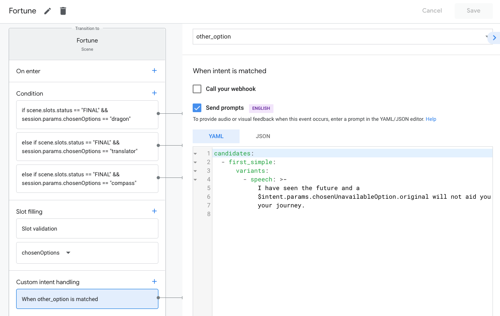
Fortune シーンでユーザーが unavailable_options タイプにリストされているオプションを発すると、 other_option インテントが一致し、プロンプトキューにプロンプトが追加されます。トランジションが指定されていないため、コンディションステージを再評価することにより、シーンの実行ループが続行されます。次に、 chosenOptions スロットがプロンプトをプロンプトキューに追加し、プロンプトキューがユーザーに配信されます。
シミュレータでアクションをテストする
アクションは、ユーザーが unavailable_options タイプにリストされているオプションの1つを選択したときに適切に応答し、ユーザーが選択した支援を指定するはずです。その後、アクションはユーザーに元の選択肢（dragon, translator, compass）のいずれかを選択するように再度要求します。
シミュレータでアクションをテストするには、次の手順に従います:
- 上部のナビゲーションバーで、 Test をクリックします。
- 入力フィールドに
Talk to my test appと入力し、 Enter キーを押します。 - Input フィールドに
Yesと入力し、 Enter キーを押します。または、Yes サジェスチョンチップをクリックします。 - Input フィールドに
magicと入力し、 Enter キーを押します。
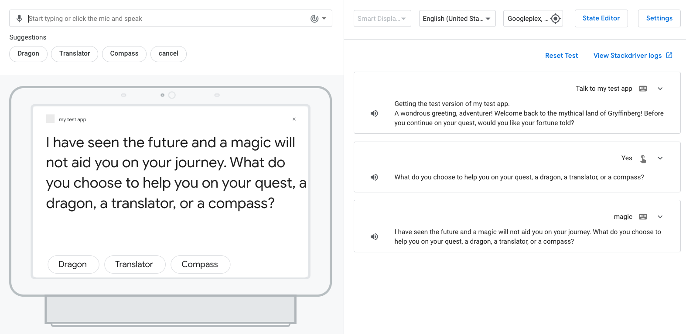
"a" の冠詞が前に配置されているため、ユーザーが "magic" を選択すると、プロンプトが正しく聞こえないことに気付くでしょう。 次のセクションでこの問題に対処します。
unavailable_options ハンドラーを追加する
unavailable_options タイプから適切な選択の前に "a" を配置するには、フルフィルメントロジックでイベントハンドラーを構成して、ユーザーが選択したオプションの前に "a" が必要かどうかを確認できます。 まず、コンソールでハンドラーを呼び出すようにアクションを構成する必要があります。
unavailable_options ハンドラーを追加するには、次の手順に従います:
- 上部ナビゲーションの Develop をクリックします。
Fortuneシーンをクリックします。- Custom intent handling で、 When other_option is matched をクリックしてウィンドウを開きます。
- Send prompts をクリアします。
- Call your webhook を選択します。
- イベントハンドラーのテキストボックスに
unavailable_optionsを入力します。
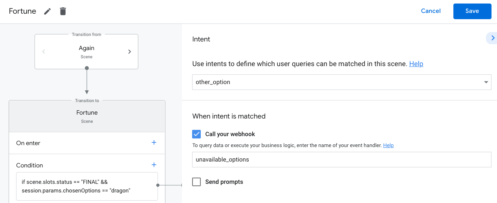
- Save をクリックします。
フルフィルメントを更新してデプロイする
unavailable_options イベントハンドラーを呼び出すようにアクションを構成したので、フルフィルメントのハンドラーを更新してデプロイできます。
フルフィルメントを更新するには、次の手順に従います:
- 左側のナビゲーションで Webhook をクリックします。
greetingハンドラの下に次のコードを追加します:
app.handle('unavailable_options', conv => {
const option = conv.intent.params.chosenUnavailableOption.original;
const optionKey = conv.intent.params.chosenUnavailableOption.resolved;
let message = 'I have seen the future and ';
if(optionsNeedA.has(optionKey)){
message = message + 'a ';
}
message = message + `${option} will not aid you on your journey. `;
conv.add(message);
});const app = conversation();の下に次のコードを追加します:
const optionsNeedA = new Set();
optionsNeedA.add('horse').add('phone');- Save Fulfillment をクリックします。
- Deploy Fulfillment をクリックします。デプロイが完了すると、エディターの上に "Your Cloud Function deployment is up to date." というメッセージが表示されます。
コードを理解する
unavailable_options ハンドラーは次のことを行います:
convオブジェクトからoptionデータを取得し、ユーザーからの生の入力であるoriginalのプロパティにoptionを割り当てます。optionKeyをresolvedプロパティに割り当てます。これは、unavailable_options タイプのキーです。optionKeyが "a" を必要とするオプションの1つであるかどうかをチェックします。ある場合は、 "a" を追加してメッセージを作成します。conv.add(message)を介してメッセージを追加します。
シミュレータでアクションをテストする
アクションは今、 unavailable_options タイプからのユーザーの選択に "a" が必要かどうかに基づいてプロンプトを調整するようになったはずです。
アクションをテストするには、次の手順に従います:
- 上部のナビゲーションバーで、 Test をクリックします。
- 入力フィールドで "Talk to my test app" をクリックまたは入力して、 Enter キーを押します。
- Input フィールドに
Yesと入力し、 Enter キーを押します。または、 Yes サジェスチョンチップをクリックします。 - 入力フィールドに
magicと入力し、 Enter キーを押します。次に、 Input フィールドにhorseと入力し、 Enter キーを押します。
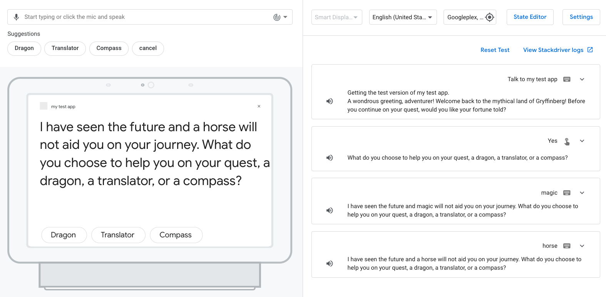
アクションは、"horse" の選択の前に "a" を追加し、 "magic" の選択の "a" の冠詞なしでプロンプトを作成するはずです。
おめでとうございます！
これで、Googleアシスタント向けアクションを開発するために必要な中級スキルについて学ぶことができました。
What we've covered
- Node.jsのフルフィルメントライブラリ を使用して会話型アクションを開発する方法
- スロットを使用してユーザーからデータを収集する方法
- コンディションを使用してシーンにロジックを追加する方法
- ゲームループを追加する方法
- サポートパスを追加する方法
Actions on Google についてもっと知る
Googleアシスタント向けアクションの構築についてさらに学ぶために、以下の資料についても参考にすることができます:
- Googleアシスタント向けアクションの開発のための ドキュメント。
- サンプルコードやライブラリがある Actions on Google GitHub ページ。
- Googleアシスタントを使って仕事をしている開発者向けの公式 Reddit コミュニティ。
- 会話型アクションに関するベストプラクティスやガイドラインが掲載されている Conversation design guideline。
最新のアナウンスを購読するために、Twitter @ActionsOnGoogle をフォローしてください。また、あなたが開発したものを #AoGDevs および #AoGDevsJa にてシェアしてください。